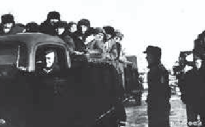
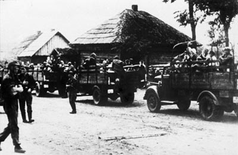

Принудительные работы
Вывоз населения на принудительные работы в Германию и другие страны Европы
Ещё одной формой геноцида белорусского народа являлся вывоз населения на принудительные работы в Германию и другие страны Европы.
За годы войны с территории БССР было угнано более 380 тыс. человек, из которых на Родину вернулось только около 223 тыс.
Рабский труд
Использование рабского труда белорусских «остарбайтеров» (восточных рабочих) практиковали не только крупные промышленные предприятия, такие как «Бенц», «Юнкерс», «Телефункен», «Люфтганза» и др., но и небольшие фирмы, а также фермеры и обыватели Германии, Австрии, Восточной Пруссии, Польши, Латвии, Литвы и других территорий.
 Оккупационные власти отправляют на работу в Германию гражданское население. 1943 г.  Солдаты войск СС сопровождают машины с жителями г. Могилёва перед отправкой в Германию. 1943 г.Нормы довольствия остарбайтеров, которые соответствовали нормам для военнопленных, повсеместно не соблюдались.
Отсутствие вещевого снабжения, медецинской помощи, заниженные нормы питания наряду с регулярными побоями по незначительным поводам, угрозами направить в лагерь смерти указывают на то, что многие рабовладельцы, разделяя нацистскую идеологию, рассматривали остарбайтеров как представителей низшей расы, подлежащей уничтожению.
Этим объясняется то, что во многих случаях им не создавались элементарные условия для жизни, работы, сохранения здоровья.
Статус «остарбайтер» не ограничивался каким-либо сроком действия или условиями контракта.
На освобождение рассчитывали в основном те, кто в ходе эксплуатации получал инвалидность.
Самоповреждение и инвалидность рассматривались восточными рабочими как единственный реальный способ вернуться на Родину.
Сбор детской крови
Массовый характер носил и угон на принудительные работы детей.
Имели место случаи использования детей в качестве доноров.
Так, в хозяйстве «Красный Берег» в Жлобинском районе Гомельской области в 1943 году был создан сборный лагерь смерти для детей в возрасте от 8 до 14 лет, который просуществовал до 25 июня 1944 года.
Дети насильно отнимались у матерей в Жлобинском, Рогачёвском, Стрешинском, Добрушском и других районах и сгонялись на данный пункт, где проходили медицинский осмотр и отправлялись в Германию
У них брали кровь для лечения раненых немецких офицеров.
Всего для этих целей увезли 1990 детей.